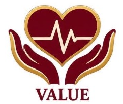
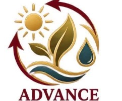

🎓 Filter Research by Course:
Showing: All MCNP Courses
MCNP HEALTH SCIENCES UTILIZATION
Explore Research by INNOVATES Agenda
Click any INNOVATES agenda pillar below to explore its Utilization Pathway, Standard Procedure, and active Research Utilization case studies.
I


Culture, Capability, and Engagement
View Pathway, Procedure & Utilization →
N
Ethics, Quality, and Accountability
View Pathway, Procedure & Utilization →
N
Digital Transformation and Infrastructure
View Pathway, Procedure & Utilization →
O
Knowledge Utilization, Innovation, and Improvement
View Pathway, Procedure & Utilization →
V

Health, Safety, and Well-Being
View Pathway, Procedure & Utilization →
A

Sustainability and Climate Resilience
View Pathway, Procedure & Utilization →
T
Community Engagement and Social Impact
View Pathway, Procedure & Utilization →
E
Partnerships, Networks, and Global Engagement
View Pathway, Procedure & Utilization →
S
Education and Institutional Performance
View Pathway, Procedure & Utilization →